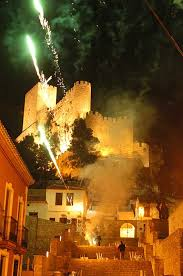
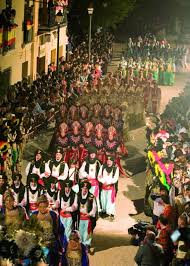
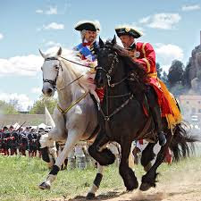

Tradición, historia y pasión festera

Las Fiestas Mayores de Almansa se celebran en honor a Nuestra Señora de Belén, patrona de la ciudad. Su origen se remonta al siglo XVII, cuando se instauraron actos religiosos y populares en su honor. Con el paso del tiempo, estas celebraciones fueron evolucionando hasta convertirse en uno de los eventos más importantes del calendario festivo de la localidad.

Uno de los elementos más representativos de las fiestas es la celebración de Moros y Cristianos, declaradas de Interés Turístico Internacional. Estas representaciones conmemoran la Reconquista y combinan historia, tradición y espectáculo con desfiles, embajadas y recreaciones históricas.

Aunque no forma parte directa de las fiestas patronales, la Batalla de Almansa (1707) es un hecho histórico fundamental para la ciudad. Durante las celebraciones también se realizan actos conmemorativos y recreaciones que recuerdan este acontecimiento clave en la Guerra de Sucesión Española.